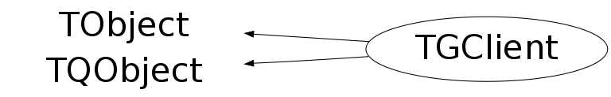

Function Members (Methods)
public:
| TGClient(const char* dpyName = 0) | |
| virtual | ~TGClient() |
| void | TObject::AbstractMethod(const char* method) const |
| void | AddIdleHandler(TGIdleHandler* h) |
| void | AddUnknownWindowHandler(TGUnknownWindowHandler* h) |
| virtual void | TObject::AppendPad(Option_t* option = "") |
| static Bool_t | TQObject::AreAllSignalsBlocked() |
| Bool_t | TQObject::AreSignalsBlocked() const |
| static Bool_t | TQObject::BlockAllSignals(Bool_t b) |
| Bool_t | TQObject::BlockSignals(Bool_t b) |
| virtual void | TObject::Browse(TBrowser* b) |
| virtual void | TQObject::ChangedBy(const char* method)SIGNAL |
| static TClass* | Class() |
| virtual const char* | TObject::ClassName() const |
| virtual void | TObject::Clear(Option_t* = "") |
| virtual TObject* | TObject::Clone(const char* newname = "") const |
| void | TQObject::CollectClassSignalLists(TList& list, TClass* cls) |
| virtual Int_t | TObject::Compare(const TObject* obj) const |
| Bool_t | TQObject::Connect(const char* signal, const char* receiver_class, void* receiver, const char* slot) |
| static Bool_t | TQObject::Connect(TQObject* sender, const char* signal, const char* receiver_class, void* receiver, const char* slot) |
| static Bool_t | TQObject::Connect(const char* sender_class, const char* signal, const char* receiver_class, void* receiver, const char* slot) |
| virtual void | TQObject::Connected(const char*) |
| virtual void | TObject::Copy(TObject& object) const |
| virtual void | TObject::Delete(Option_t* option = "")MENU |
| virtual void | TQObject::Destroyed()SIGNAL |
| Bool_t | TQObject::Disconnect(const char* signal = 0, void* receiver = 0, const char* slot = 0) |
| static Bool_t | TQObject::Disconnect(TQObject* sender, const char* signal = 0, void* receiver = 0, const char* slot = 0) |
| static Bool_t | TQObject::Disconnect(const char* class_name, const char* signal, void* receiver = 0, const char* slot = 0) |
| virtual void | TQObject::Disconnected(const char*) |
| virtual Int_t | TObject::DistancetoPrimitive(Int_t px, Int_t py) |
| virtual void | TObject::Draw(Option_t* option = "") |
| virtual void | TObject::DrawClass() constMENU |
| virtual TObject* | TObject::DrawClone(Option_t* option = "") constMENU |
| virtual void | TObject::Dump() constMENU |
| void | TQObject::Emit(const char* signal) |
| void | TQObject::Emit(const char* signal, Long_t* paramArr) |
| void | TQObject::Emit(const char* signal, const char* params) |
| void | TQObject::Emit(const char* signal, Double_t param) |
| void | TQObject::Emit(const char* signal, Long_t param) |
| void | TQObject::Emit(const char* signal, Long64_t param) |
| void | TQObject::Emit(const char* signal, Bool_t param) |
| void | TQObject::Emit(const char* signal, Char_t param) |
| void | TQObject::Emit(const char* signal, UChar_t param) |
| void | TQObject::Emit(const char* signal, Short_t param) |
| void | TQObject::Emit(const char* signal, UShort_t param) |
| void | TQObject::Emit(const char* signal, Int_t param) |
| void | TQObject::Emit(const char* signal, UInt_t param) |
| void | TQObject::Emit(const char* signal, ULong_t param) |
| void | TQObject::Emit(const char* signal, ULong64_t param) |
| void | TQObject::Emit(const char* signal, Float_t param) |
| void | TQObject::EmitVA(const char* signal, Int_t nargs) |
| void | TQObject::EmitVA(const char* signal, Int_t nargs, va_list va) |
| virtual void | TObject::Error(const char* method, const char* msgfmt) const |
| virtual void | TObject::Execute(const char* method, const char* params, Int_t* error = 0) |
| virtual void | TObject::Execute(TMethod* method, TObjArray* params, Int_t* error = 0) |
| virtual void | TObject::ExecuteEvent(Int_t event, Int_t px, Int_t py) |
| virtual void | TObject::Fatal(const char* method, const char* msgfmt) const |
| virtual TObject* | TObject::FindObject(const char* name) const |
| virtual TObject* | TObject::FindObject(const TObject* obj) const |
| void | ForceRedraw() |
| void | FreeColor(Pixel_t color) const |
| void | FreeFont(const TGFont* font) |
| void | FreeGC(const TGGC* gc) |
| void | FreeGC(GContext_t gc) |
| void | FreePicture(const TGPicture* pic) |
| Bool_t | GetColorByName(const char* name, Pixel_t& pixel) const |
| Colormap_t | GetDefaultColormap() const |
| const TGWindow* | GetDefaultRoot() const |
| UInt_t | GetDisplayHeight() const |
| UInt_t | GetDisplayWidth() const |
| virtual Option_t* | TObject::GetDrawOption() const |
| static Long_t | TObject::GetDtorOnly() |
| TGFont* | GetFont(const TGFont* font) |
| TGFont* | GetFont(const char* font, Bool_t fixedDefault = kTRUE) |
| FontStruct_t | GetFontByName(const char* name, Bool_t fixedDefault = kTRUE) const |
| TGFontPool* | GetFontPool() const |
| TGGC* | GetGC(GCValues_t* values, Bool_t rw = kFALSE) |
| TGGCPool* | GetGCPool() const |
| Pixel_t | GetHilite(Pixel_t base_color) const |
| virtual const char* | TObject::GetIconName() const |
| TList* | TQObject::GetListOfClassSignals() const |
| TList* | TQObject::GetListOfConnections() const |
| TList* | GetListOfPopups() const |
| TList* | TQObject::GetListOfSignals() const |
| THashList* | GetListOfWindows() const |
| TGMimeTypes* | GetMimeTypeList() const |
| virtual const char* | TObject::GetName() const |
| virtual char* | TObject::GetObjectInfo(Int_t px, Int_t py) const |
| static Bool_t | TObject::GetObjectStat() |
| virtual Option_t* | TObject::GetOption() const |
| const TGPicture* | GetPicture(const char* name) |
| const TGPicture* | GetPicture(const char* name, UInt_t new_width, UInt_t new_height) |
| TGPicturePool* | GetPicturePool() const |
| const TGResourcePool* | GetResourcePool() const |
| const TGWindow* | GetRoot() const |
| Pixel_t | GetShadow(Pixel_t base_color) const |
| UInt_t | GetStyle() const |
| virtual const char* | TObject::GetTitle() const |
| virtual UInt_t | TObject::GetUniqueID() const |
| EGEventType | GetWaitForEvent() const |
| Window_t | GetWaitForWindow() const |
| TGWindow* | GetWindowById(Window_t sw) const |
| TGWindow* | GetWindowByName(const char* name) const |
| Bool_t | HandleEvent(Event_t* event) |
| Bool_t | HandleInput() |
| Bool_t | HandleMaskEvent(Event_t* event, Window_t wid) |
| virtual Bool_t | TObject::HandleTimer(TTimer* timer) |
| virtual Bool_t | TQObject::HasConnection(const char* signal_name) const |
| virtual ULong_t | TObject::Hash() const |
| virtual void | TQObject::HighPriority(const char* signal_name, const char* slot_name = 0) |
| virtual void | TObject::Info(const char* method, const char* msgfmt) const |
| virtual Bool_t | TObject::InheritsFrom(const char* classname) const |
| virtual Bool_t | TObject::InheritsFrom(const TClass* cl) const |
| virtual void | TObject::Inspect() constMENU |
| void | TObject::InvertBit(UInt_t f) |
| virtual TClass* | IsA() const |
| Bool_t | IsEditable() const |
| Bool_t | IsEditDisabled() const |
| virtual Bool_t | TObject::IsEqual(const TObject* obj) const |
| virtual Bool_t | TObject::IsFolder() const |
| Bool_t | TObject::IsOnHeap() const |
| virtual Bool_t | TObject::IsSortable() const |
| Bool_t | TObject::IsZombie() const |
| static void | TQObject::LoadRQ_OBJECT() |
| virtual void | TQObject::LowPriority(const char* signal_name, const char* slot_name = 0) |
| virtual void | TObject::ls(Option_t* option = "") const |
| void | TObject::MayNotUse(const char* method) const |
| virtual void | TQObject::Message(const char* msg)SIGNAL |
| void | NeedRedraw(TGWindow* w, Bool_t force = kFALSE) |
| virtual Bool_t | TObject::Notify() |
| virtual Int_t | TQObject::NumberOfConnections() const |
| virtual Int_t | TQObject::NumberOfSignals() const |
| void | TObject::Obsolete(const char* method, const char* asOfVers, const char* removedFromVers) const |
| static void | TObject::operator delete(void* ptr) |
| static void | TObject::operator delete(void* ptr, void* vp) |
| static void | TObject::operator delete[](void* ptr) |
| static void | TObject::operator delete[](void* ptr, void* vp) |
| void* | TObject::operator new(size_t sz) |
| void* | TObject::operator new(size_t sz, void* vp) |
| void* | TObject::operator new[](size_t sz) |
| void* | TObject::operator new[](size_t sz, void* vp) |
| virtual void | TObject::Paint(Option_t* option = "") |
| virtual void | TObject::Pop() |
| virtual void | TObject::Print(Option_t* option = "") const |
| void | ProcessedEvent(Event_t* event, Window_t wid)SIGNAL |
| Bool_t | ProcessEventsFor(TGWindow* w) |
| void | ProcessLine(TString cmd, Long_t msg, Long_t parm1, Long_t parm2) |
| virtual Int_t | TObject::Read(const char* name) |
| virtual void | TObject::RecursiveRemove(TObject* obj) |
| void | RegisteredWindow(Window_t w)SIGNAL |
| void | RegisterPopup(TGWindow* w) |
| void | RegisterWindow(TGWindow* w) |
| void | RemoveIdleHandler(TGIdleHandler* h) |
| void | RemoveUnknownWindowHandler(TGUnknownWindowHandler* h) |
| void | TObject::ResetBit(UInt_t f) |
| void | ResetWaitFor(TGWindow* w) |
| virtual void | TObject::SaveAs(const char* filename = "", Option_t* option = "") constMENU |
| virtual void | TObject::SavePrimitive(ostream& out, Option_t* option = "") |
| void | TObject::SetBit(UInt_t f) |
| void | TObject::SetBit(UInt_t f, Bool_t set) |
| virtual void | TObject::SetDrawOption(Option_t* option = "")MENU |
| static void | TObject::SetDtorOnly(void* obj) |
| void | SetEditDisabled(Bool_t on = kTRUE) |
| static void | TObject::SetObjectStat(Bool_t stat) |
| void | SetRoot(TGWindow* root = 0) |
| void | SetStyle(UInt_t newstyle) |
| void | SetStyle(const char* style) |
| virtual void | TObject::SetUniqueID(UInt_t uid) |
| virtual void | ShowMembers(TMemberInspector& insp) |
| virtual void | Streamer(TBuffer& b) |
| void | StreamerNVirtual(TBuffer& b) |
| virtual void | TObject::SysError(const char* method, const char* msgfmt) const |
| Bool_t | TObject::TestBit(UInt_t f) const |
| Int_t | TObject::TestBits(UInt_t f) const |
| void | UnregisterPopup(TGWindow* w) |
| void | UnregisterWindow(TGWindow* w) |
| virtual void | TObject::UseCurrentStyle() |
| void | WaitFor(TGWindow* w) |
| void | WaitForUnmap(TGWindow* w) |
| virtual void | TObject::Warning(const char* method, const char* msgfmt) const |
| virtual Int_t | TObject::Write(const char* name = 0, Int_t option = 0, Int_t bufsize = 0) |
| virtual Int_t | TObject::Write(const char* name = 0, Int_t option = 0, Int_t bufsize = 0) const |
protected:
| TGClient(const TGClient&) | |
| static Int_t | TQObject::CheckConnectArgs(TQObject* sender, TClass* sender_class, const char* signal, TClass* receiver_class, const char* slot) |
| static Bool_t | TQObject::ConnectToClass(TQObject* sender, const char* signal, TClass* receiver_class, void* receiver, const char* slot) |
| static Bool_t | TQObject::ConnectToClass(const char* sender_class, const char* signal, TClass* receiver_class, void* receiver, const char* slot) |
| virtual void | TObject::DoError(int level, const char* location, const char* fmt, va_list va) const |
| Bool_t | DoRedraw() |
| virtual void* | TQObject::GetSender() |
| virtual const char* | TQObject::GetSenderClassName() const |
| void | TObject::MakeZombie() |
| TGClient& | operator=(const TGClient&) |
| Bool_t | ProcessIdleEvent() |
| Bool_t | ProcessOneEvent() |
Data Members
public:
| enum TObject::EStatusBits { | kCanDelete | |
| kMustCleanup | ||
| kObjInCanvas | ||
| kIsReferenced | ||
| kHasUUID | ||
| kCannotPick | ||
| kNoContextMenu | ||
| kInvalidObject | ||
| }; | ||
| enum TObject::[unnamed] { | kIsOnHeap | |
| kNotDeleted | ||
| kZombie | ||
| kBitMask | ||
| kSingleKey | ||
| kOverwrite | ||
| kWriteDelete | ||
| }; |
protected:
| Pixel_t | fBackColor | default background color |
| Pixel_t | fBlack | black color index |
| Colormap_t | fDefaultColormap | default colormap |
| TGWindow* | fDefaultRoot | default root window (base window of display) |
| TGFontPool* | fFontPool | font pool |
| Bool_t | fForceRedraw | redraw widgets as soon as possible |
| Pixel_t | fForeColor | default foreground color |
| TGGCPool* | fGCPool | graphics context pool |
| Bool_t | fGlobalNeedRedraw | true if at least one window needs to be redrawn |
| Pixel_t | fHilite | default hilite color |
| TList* | fIdleHandlers | list of idle handlers |
| TList* | TQObject::fListOfConnections | ! list of connections to this object |
| TList* | TQObject::fListOfSignals | ! list of signals from this object |
| TGMimeTypes* | fMimeTypeList | mimetype list |
| TGPicturePool* | fPicturePool | pixmap pool |
| TList* | fPlist | list of popup windows used in HandleMaskEvent() |
| TGResourcePool* | fResourcePool | global GUI resource pool |
| TGWindow* | fRoot | current root window (changing root window allows embedding) |
| Pixel_t | fSelBackColor | default selection background color |
| Pixel_t | fSelForeColor | default selection foreground color |
| Pixel_t | fShadow | default shadow color |
| Bool_t | TQObject::fSignalsBlocked | ! flag used for suppression of signals |
| UInt_t | fStyle | GUI style (modern or classic) |
| TList* | fUWHandlers | list of event handlers for unknown windows |
| EGEventType | fWaitForEvent | event to wait for |
| Window_t | fWaitForWindow | window in which to wait for event |
| Pixel_t | fWhite | white color index |
| THashList* | fWlist | list of frames |
| Int_t | fXfd | file descriptor of connection to server |
| static Bool_t | TQObject::fgAllSignalsBlocked | flag used for suppression of all signals |
Class Charts
{kind=link}
{kind=link}
{kind=link}
{kind=link}

Function documentation
TGClient(const char* dpyName = 0)
Create a connection with the display sever on host dpyName and setup the complete GUI system, i.e., graphics contexts, fonts, etc. for all widgets.
const TGWindow * GetRoot() const
Returns current root (i.e. base) window. By changing the root window one can change the window hierarchy, e.g. a top level frame (TGMainFrame) can be embedded in another window.
const TGWindow * GetDefaultRoot() const
Returns the root (i.e. desktop) window. Should only be used as parent for frames that will never be embedded, like popups, message boxes, etc. (like TGToolTips, TGMessageBox, etc.).
void SetRoot(TGWindow* root = 0)
Sets the current root (i.e. base) window. By changing the root window one can change the window hierarchy, e.g. a top level frame (TGMainFrame) can be embedded in another window.
const TGPicture * GetPicture(const char* name)
Get picture from the picture pool. Picture must be freed using TGClient::FreePicture(). If picture is not found 0 is returned.
const TGPicture * GetPicture(const char* name, UInt_t new_width, UInt_t new_height)
Get picture with specified size from pool (picture will be scaled if necessary). Picture must be freed using TGClient::FreePicture(). If picture is not found 0 is returned.
TGGC * GetGC(GCValues_t* values, Bool_t rw = kFALSE)
Get graphics context from the gc pool. Context must be freed via TGClient::FreeGC(). If rw is true a new read/write-able GC is returned, otherwise a shared read-only context is returned. For historical reasons it is also possible to create directly a TGGC object, but it is advised to use this new interface only.
Bool_t GetColorByName(const char* name, Pixel_t& pixel) const
FontStruct_t GetFontByName(const char* name, Bool_t fixedDefault = kTRUE) const
Get a font by name. If font is not found, fixed font is returned, if fixed font also does not exist return 0 and print error. The loaded font needs to be freed using TVirtualX::DeleteFont(). If fixedDefault is false the "fixed" font will not be substituted as fallback when the asked for font does not exist.
Pixel_t GetShadow(Pixel_t base_color) const
Return pixel value of shadow color based on base_color. Shadow is 60% of base_color intensity.
void RegisterPopup(TGWindow* w)
Add a popup menu to the list of popups. This list is used to pass events to popup menus that are popped up over a transient window which is waited for (see WaitFor()).
void AddUnknownWindowHandler(TGUnknownWindowHandler* h)
Add handler for unknown (i.e. unregistered) windows.
void RemoveUnknownWindowHandler(TGUnknownWindowHandler* h)
Remove handler for unknown (i.e. unregistered) windows.
TGWindow * GetWindowById(Window_t sw) const
Find a TGWindow via its handle. If window is not found return 0.
TGWindow * GetWindowByName(const char* name) const
Find a TGWindow via its name (unique name used in TGWindow::SavePrimitive). If window is not found return 0.
Bool_t ProcessOneEvent()
Process one event. This method should only be called when there is a GUI event ready to be processed. If event has been processed kTRUE is returned. If processing of a specific event type for a specific window was requested kFALSE is returned when specific event has been processed, kTRUE otherwise. If no more pending events return kFALSE.
Bool_t ProcessEventsFor(TGWindow* w)
Like gSystem->ProcessEvents() but then only allow events for w to be processed. For example to interrupt the processing and destroy the window, call gROOT->SetInterrupt() before destroying the window.
Bool_t HandleMaskEvent(Event_t* event, Window_t wid)
Handle masked events only if window wid is the window for which the event was reported or if wid is a parent of the event window. The not masked event are handled directly. The masked events are: kButtonPress, kButtonRelease, kKeyPress, kKeyRelease, kEnterNotify, kLeaveNotify, kMotionNotify.
void ProcessLine(TString cmd, Long_t msg, Long_t parm1, Long_t parm2)
Execute string "cmd" via the interpreter. Before executing replace in the command string the token $MSG, $PARM1 and $PARM2 by msg, parm1 and parm2, respectively. The function in cmd string must accept these as longs.
void ProcessedEvent(Event_t* event, Window_t wid)
Emits a signal when an event has been processed. Used in TRecorder.
void RegisteredWindow(Window_t w)